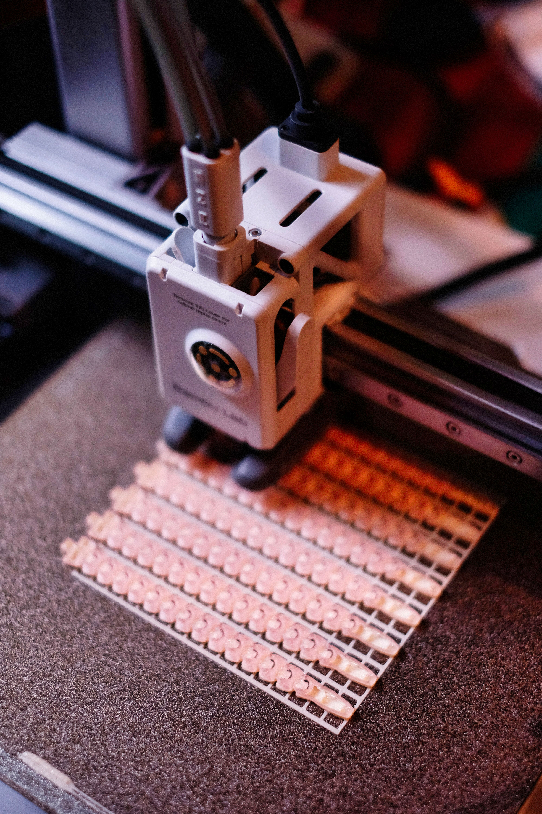
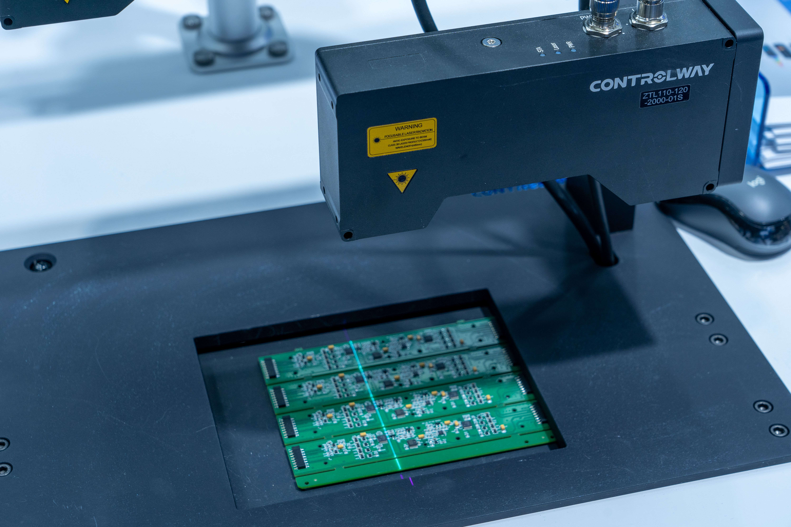
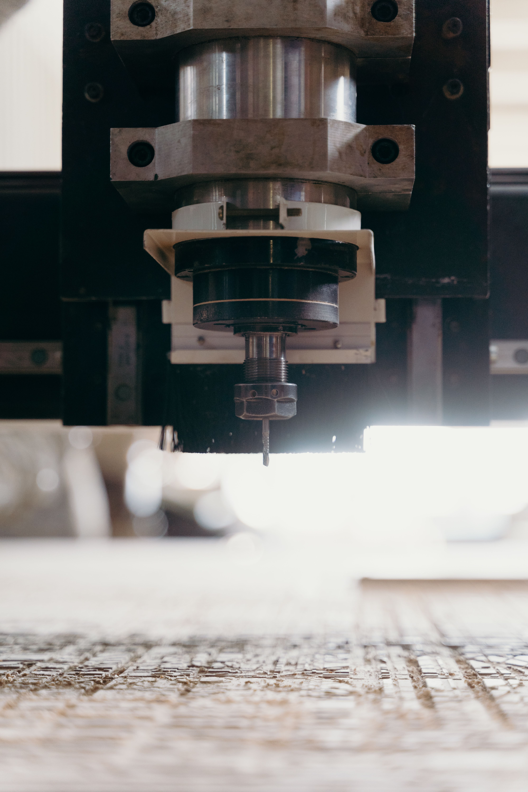

Tervezés & fejlesztés
Konstrukciós, mechanikai és elektronikai tervezés az igényfelméréstől a gyártható dokumentációig.
↗SheepForge · Gépészet & elektronika
Egyedi eszközöket és célgépeket tervezünk, gyártunk, javítunk és helyezünk üzembe. A megvalósításhoz többek között 3D nyomtatást, lézergravírozást és CNC marást is alkalmazunk.
Két ember. Közös megoldások.
Minden feladatot teljes rendszerként kezelünk: a mechanikai és elektronikai tervezéstől a gyártáson és programozáson át a beüzemelésig. A műszaki projekteket Konrád fogja össze, a megvalósítás minden szakaszában közösen dolgozunk.
Balogh RóbertKözreműködő a műszaki projektekben
Hájas KonrádA SheepForge megálmodója · a gépészeti és elektronikai terület felelőse
A projekt munkafolyamataiban mindketten részt veszünk.
Ismerj meg bennünket ↗Komplex szolgáltatások
Mechanika, elektronika és gépvezérlés összehangolva, együtt dolgozó csapatunktól.
Konstrukciós, mechanikai és elektronikai tervezés az igényfelméréstől a gyártható dokumentációig.
↗Alkatrészek, készülékek, prototípusok és komplett célgépek kivitelezése 3D nyomtatással, lézergravírozással, CNC marással és további technológiákkal.
↗Helyszíni telepítés, hibakeresés, karbantartás és javítás mechanikai, illetve elektronikai rendszereken.
↗Gépvezérlések, egyedi szoftverek és automatizálási megoldások fejlesztése, karbantartása és műszaki támogatása.
↗Gyártási technológiák
Mindig a feladathoz választunk eljárást. A géppark, a szakmai tudás és az elérhető gyártási lehetőségek folyamatosan bővülnek.

Prototípusok, egyedi alkatrészek, burkolatok, tartók és kis sorozatok gyors elkészítéséhez.

Feliratok, jelölések, adattáblák, dekorációk és személyre szabott munkadarabok precíz kivitelezéséhez.

Pontos, ismételhető alkatrészgyártás és egyedi mechanikai elemek megmunkálása.
Új technológiákat és eljárásokat vezetünk be, hogy egyre több különleges feladatot tudjunk helyben megoldani.
Nincs kész megoldás?
Ha olyan speciális műszaki problémád van, amelyre más nem talált megoldást, nincs hozzá kész eszköz, vagy túl egyedi egy szabványos rendszerhez, keress bennünket bátran. Feltérképezzük a feladatot, új szemszögből vizsgáljuk meg, és kifejezetten arra tervezünk működő megoldást.
Beszéljük át ↗Mérnöki megoldások
Van egy műszaki feladatod?
Írd le röviden a problémát vagy az elképzelést, és felvesszük veled a kapcsolatot a műszaki egyeztetéshez.